べんきょうで コインを あつめて、300しゅるいの モンスターシールを ゲット！
そだてて しんかさせて、たいせんも できるよ。
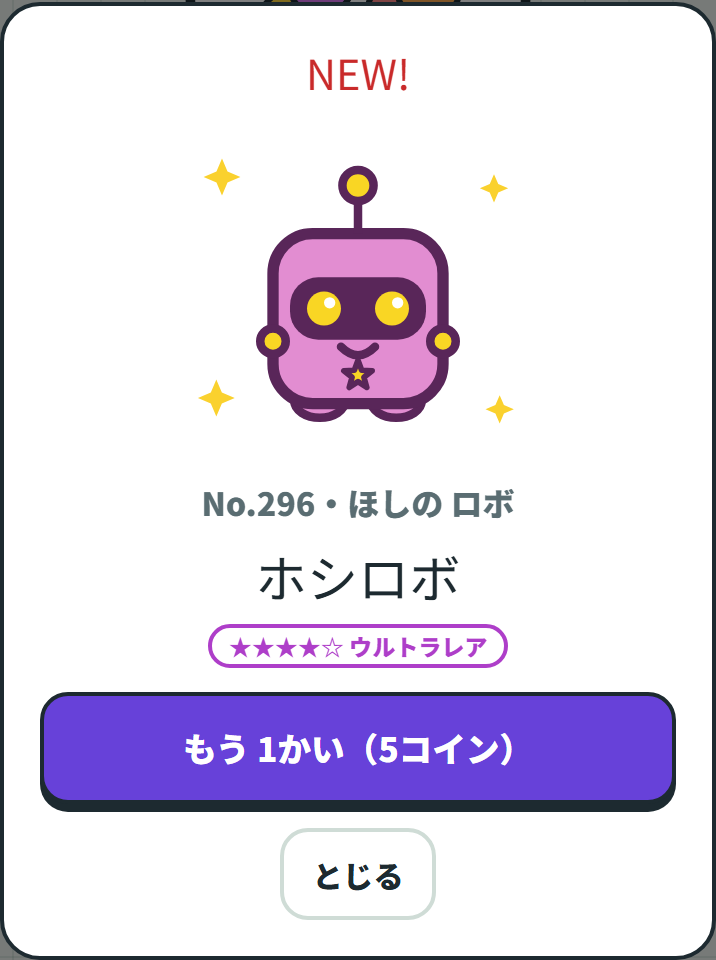
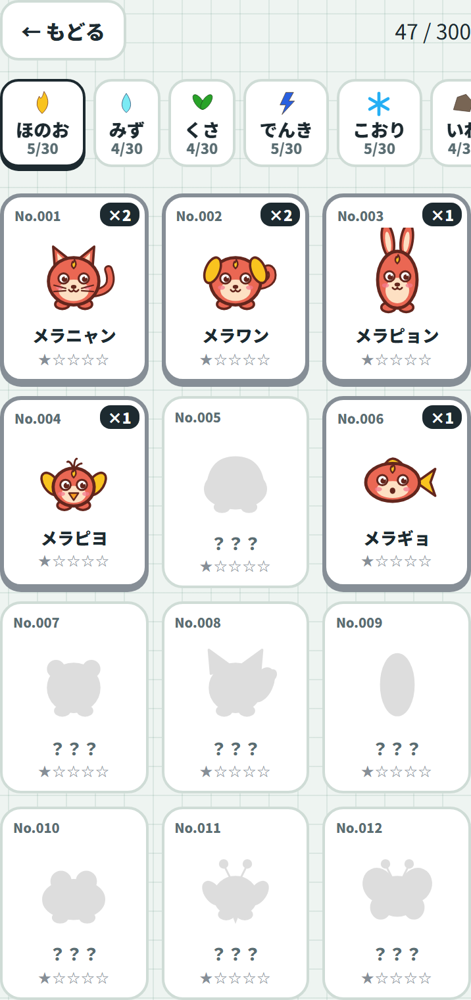
さんすうと かん字の もんだいを とくと コインが もらえるよ。
コインで ガチャを まわして、モンスターの シールを あつめよう。
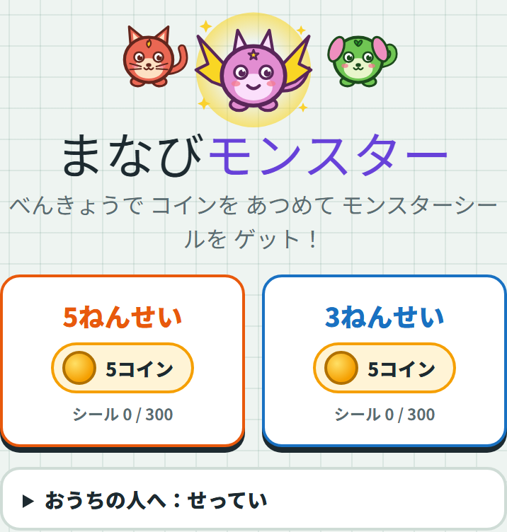
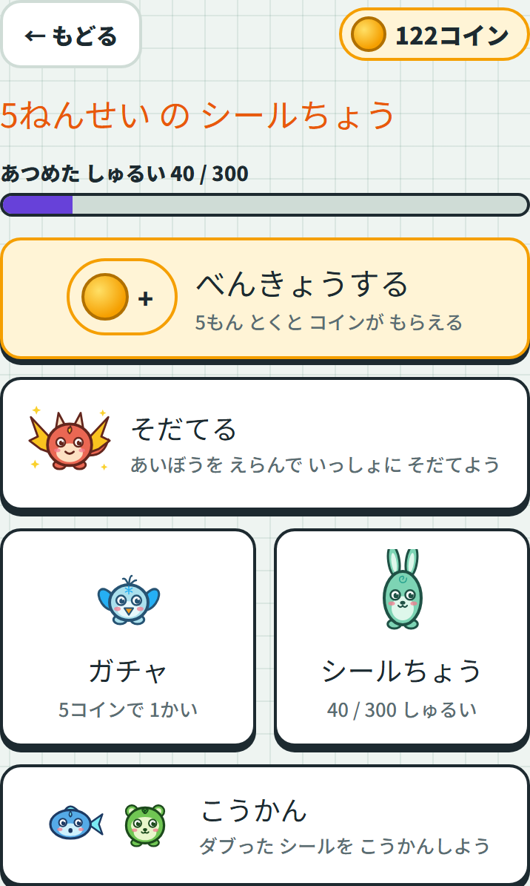
まちがえても だいじょうぶ。
なんかいでも やりなおせるよ。
5年の もんだいが でるよ
3年の もんだいが でるよ
ちゅうい じぶんの なまえを えらぶこと。
まちがえて えらぶと、おねえちゃん（いもうと）の コインを つかってしまうよ。
1日に 1かい ひらくだけで ログインボーナス +2コイン！ まいにち ちょっとだけでも ひらこう。
ホームの べんきょうするを おすと、もんだいが 5もん でるよ。
さんすう → かん字 → さんすう … と こうたいで でてくる。
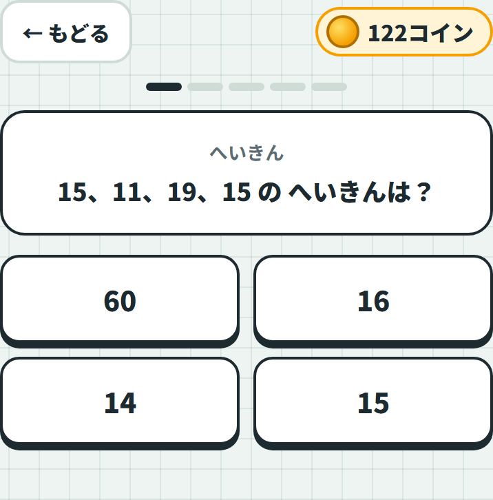
| できたこと | もらえる もの |
|---|---|
| 1もん せいかい | +1 コイン と けいけんち +10 |
| 8びょう いないに せいかい | けいけんち +5 おまけ（はやおし） |
| 5もん ぜんぶ せいかい | +2 コイン（ぜんもん ボーナス） |
| まちがえた | けいけんち +2（0じゃないよ） |
だから 5もん ぜんぶ せいかいすると 7コイン。
けいけんちは あいぼうに はいるよ（6しょうを 見てね）。
コツ わからない もんだいは、よく 見て かんがえてから おそう。
まちがえても けいけんちは もらえるから、とりあえず おしても いいよ。
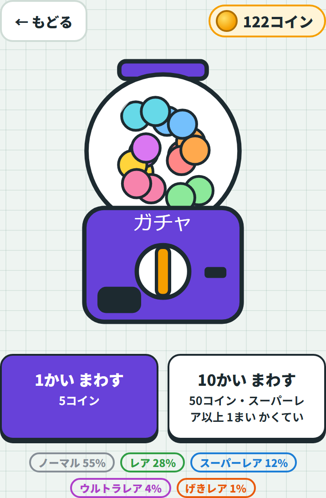
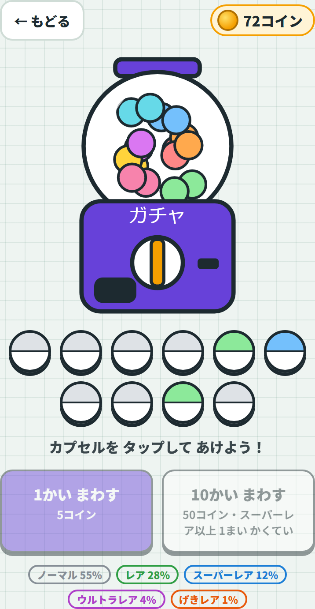
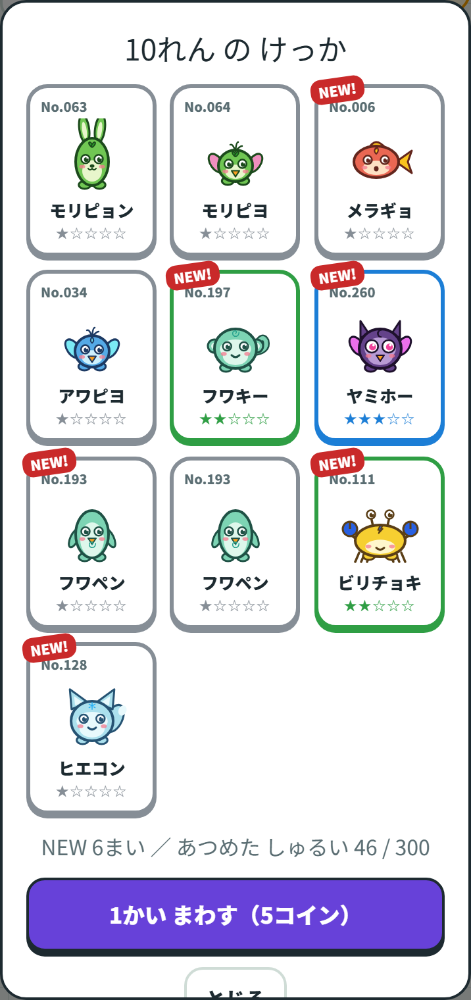
| まわしかた | いる コイン | もらえる シール |
|---|---|---|
| 1かい まわす | 5コイン | 1まい |
| 10れん | 50コイン | 10まい（スーパーレア いじょうが 1まい かくてい） |
でてくる シールの めずらしさは 5だんかい。でる かくりつは こうなっているよ。
| レアど | でる かくりつ | めやす |
|---|---|---|
| ノーマル | 55% | 2かいに 1かいくらい |
| レア | 28% | 4かいに 1かいくらい |
| スーパーレア | 12% | 8かいに 1かいくらい |
| ウルトラレア | 4% | 25かいに 1かいくらい |
| げきレア | 1% | 100かいに 1かいくらい |
おなじ シールが でることも あるよ（ダブり）。ダブった シールは こうかんに つかえる（9しょう）。
あつめた シールは シールちょうで 見られるよ。ぜんぶで 300しゅるい！
モンスターは 10こ の ぞくせいに わかれているよ。
ほのお・みず・くさ・でんき・こおり・いわ・かぜ・ひかり・やみ・ほし
「ひかり」「やみ」「ほし」の 3つは めずらしい ぞくせい。レアどが 1つ あがるよ。
ホームの そだてるを おして、あいぼうを えらぶ。
シールちょうの なかから すきな 1ひきを あいぼうに できるよ。
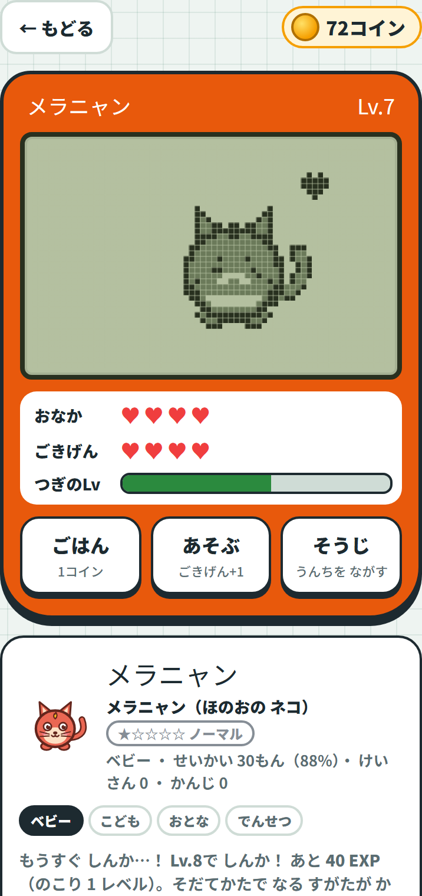
| ボタン | すること | いる もの |
|---|---|---|
| ごはん | おなかが ♥1 ふえる | 1コイン |
| あそぶ | ごきげんが ♥1 ふえる | ただ |
| そうじ | うんちを ながす | ただ |
たいせつ おなかと ごきげんは 4じかんごとに へっていく。
ほうっておくと うんちが たまって、もらえる けいけんちが はんぶんに なってしまうよ。
1日に 1かいは 見に いってあげよう。
あいぼうは あとから あいぼうを かえるで とりかえられるし、なまえを かえるで すきな なまえも つけられる。
まえの あいぼうに もどすと、レベルも そのまま のこっているよ。
あいぼうは Lv.8・Lv.18・Lv.30で しんかする。
ぞくせいは そのままで、もっと つよい すがたに かわるよ。
しんかした すがたは シールちょうにも ふえる！
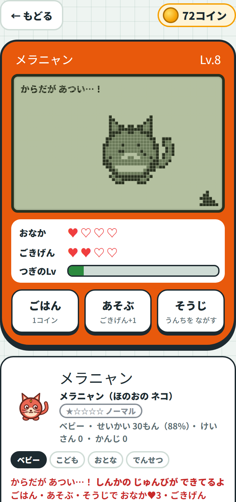
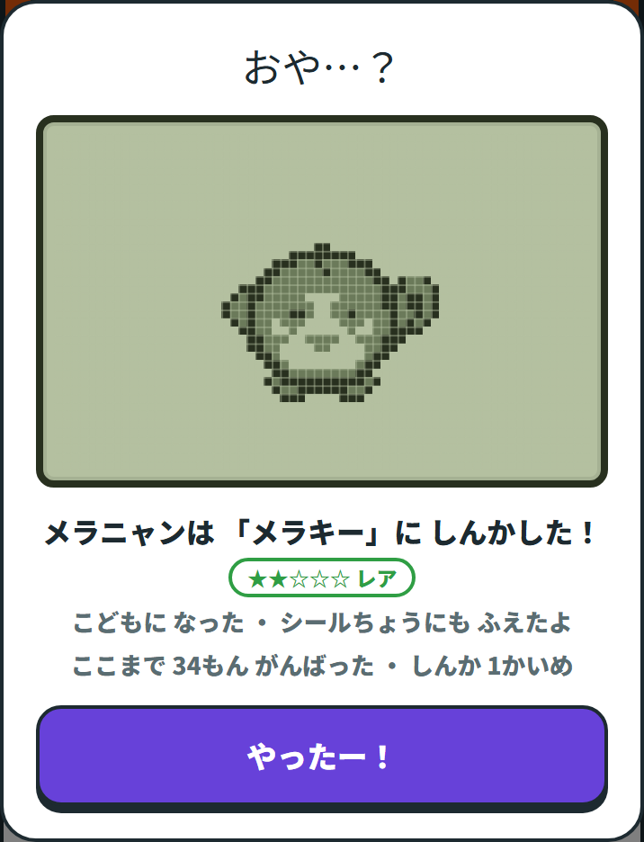
かんたんには しんかしないよ
レベルが とどいただけでは しんかしない。
おなか ♥3 いじょう・ごきげん ♥3 いじょう・うんち 0
＝「ちゃんと おせわ できている」ことが ひつようなんだ。
この しらせは、ホームの「そだてる」と、べんきょうが おわった がめんにも でるよ。
「あと なんEXP で しんか」も いつも でているから、ゴールを 見ながら すすめよう。
ここが おもしろいところ
しんか したあとの すがたは、そだてかたで かわるんだ。
さんすうを おおく とくか、かん字を おおく とくか、せいかいが おおいか、ほうっておいたか — それで なる すがたが ちがうよ。
おねえちゃんと いもうとで、おなじ モンスターから べつの すがたに なるかも！
そだてる → べつの スマホと たいせんで、おともだちや きょうだいと たたかえるよ。
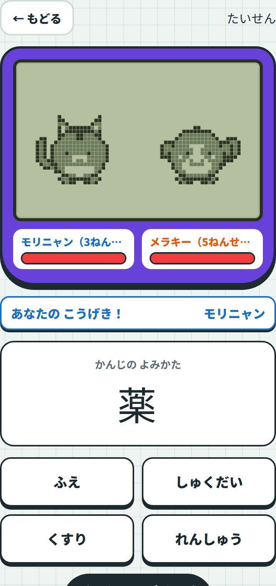
| きまり | ないよう |
|---|---|
| HP | 2人とも 60 |
| こうげき | じぶんの 学年の もんだいが でる。せいかいで ダメージ、まちがいは 0 |
| つよさ | レベルが たかい・レアどが たかい あいぼうほど つよい（はやく こたえると もっと つよい） |
| せんこう | 学年が したの子（3ねんせい）から |
| かったら | けいけんち +20 |
| まけても | けいけんち +12 |
まけても けいけんちは もらえるから、どんどん たいせんしよう。ごきげんも +1 に なるよ。
ダブった シールは、ほかの人の シールと とりかえられるよ。
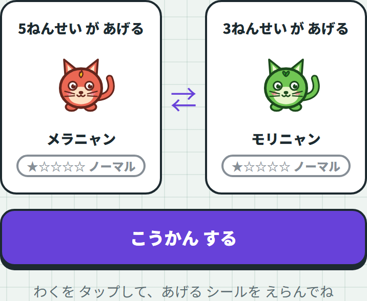
おなじ スマホの なかで、おねえちゃん ↔ いもうと で とりかえる。
おたがいに あげる シールを えらぶだけ。
べつの スマホの 人と とりかえる。
4けたの すうじを つかうのは たいせんと おなじ。
ちゅうい あげた シールは かえってこないよ。
1まいしか もっていない シールは あげられないように なっているから、あんしんして。
tests/shots.cjs で自動撮影 → site/shots/ に保存。画面を変えたら撮り直してください。src/manabi-monster.html の EVO_LV と evoReady の2か所です。